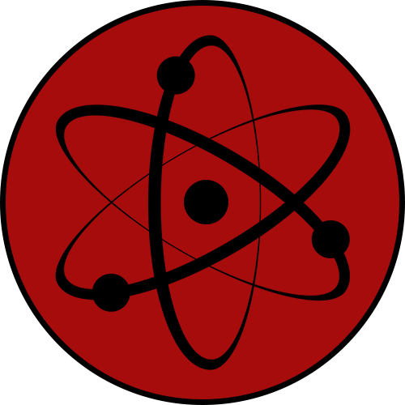

|  | Официальный сайт команды ATOM | Стремящиеся к новым вершинам | Aratana Takami O Mezasu |
"Стремящиеся к новым вершинам" или, попросту, команда ATOM - небольшое объединение людей разных возрастов, национальностей и интересов, которых свело вместе одно увлечение, а именно - жажда созидания. Что может быть приятнее, чем развиваться и совершенствовать свои знания? Конечно же - создавать что ни будь своё! И не просто создавать, а создавать для кого то, зная, что твоя работа может принести хоть кому ни будь пользу. И под пользой я не обязательно подразумеваю пользу практическую. Нет! Радость, хорошее настроение и способ скоротать немножко свободного времени - это всё можно дать людям, приложив лишь немного усилий. Разве это не прекрасно? Ради этого явно стоит жить.
Так кто же мы такие? Мы - просто группа людей, которые хотят создавать что то своё. Не важно, нужно ли кому то это, есть ли аналоги тому, что мы создаём. Нам нравится сам процесс, а если кому то приглянется и результат, что же, это будет очень даже хорошо!)
| ATOM расшифровывается, как "Aratana Takami O Mezasu" или "Aratana Takami O Mezashimasu", что в переводе с японского и значит "Стремящиеся к новым вершинам"
На данный момент слово "команда" - это скорее отсылка к нашему прошлому. В далёком 2012 году, на одном небольшом, но очень хорошем, форуме, встретились 2 человека. Оба они занимались изучением кодинга на простеньком движке, написанном на c++ и оба были охвачены желанию к созиданию. Звали их Андрей и Эд. Они были лишь детьми, играющимися в программистов, но играть в одиночку скучно, поэтому они решили объединиться и делать что то своё вместе. Так и началась история нашей команды.
| Первая наша команда называлась ERKD. Эта аббревиатура не имела логической расшифровки. Она получилась из слияния фраз "Evolution Retryborn" и "Knight of Death", которые, в свою очередь, были бывшими названиями проектов Эда и Андрея.
Не буду расписывать историю ERKD во всех красках. Где то в группе, помню, выкладывались вырезки из нашего развития. Да и на сайте можно найти информацию по этой теме. Скажу лишь, что то, что мы делали, не было идеальным. Скорее даже, вызывало отвращение у тех, кто это видел. Но мы не сдавались! Мы продолжали стараться и идти к нашей цели - сделать что то достойное, своими руками. Постепенно мы становились опытнее, наш проект обретал форму (не обошлось без пары - тройки перерождений проекта), а у нас появлялись первые фанаты, друзья и союзники. Со временем к нам начали присоединяться ещё люди. Вместе мы постепенно делали наш проект, общались, получали удовольствие от процесса, развивались и набирались опыта. Через какое то время, многие из участников основного проекта заявили об открытии своих собственных. Это привлекло ещё фанатов, многие из которых были готовы помогать нам, а в итоге стали нашими хорошими друзьями. Но время шло, мы росли, как и наше самомнение. В 2014 году в нашей команде произошёл разлад из за которого мы разделились на 2 части, бывшую ERKD, которая забрала с собой основной проект и новую, нынешнюю, ATOM, которую создала основная масса бывших ERKDшников. Новая команда оставила за собой все второстепенные проекты прошлой команды.
| Все проекты, которыми мы занимались до 2016 года, были посвящены аниме тематике и делались на одном и том же движке.
После этого момента у нас были некоторые перепалки, между сторонами. Наши отношения складывались не лучшим образом, но в конце концов, когда основной проект застрял в состоянии, близком к завершению, что то пошло не так и мы, померившись и вновь начав общаться, приложили небольшое усилие для завершения нашего общего детища (атом прикладывал скорее моральные усилия, но это тоже считается, я думаю...). Так, я бы даже сказал, успешно закончилась история ERKD. А АТОМ остался, хотя большая наша часть, решила оставить разработку своих проектов. Людей можно понять. Личная жизнь там... учёба, все дела. А те, что остались - а это лишь пара человек, работают со скоростью сонных улиток. Но, надеюсь, когда ни будь это исправится.